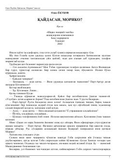

QMUrush yillaridagi xotiralar va yapon qizi Moriko haqidagi ta'sirli qissa.
Ushbu qissada Ikkinchi jahon urushi yillarida Port-Artur shahrida bo'lib o'tgan voqealar, oddiy askarning taqdiri va yapon qizi Moriko bilan bog'liq xotiralar hikoya qilinadi. Adib inson taqdiri, tasodiflar va o'tmish xotiralarining inson hayotidagi o'rnini mahorat bilan ochib beradi.